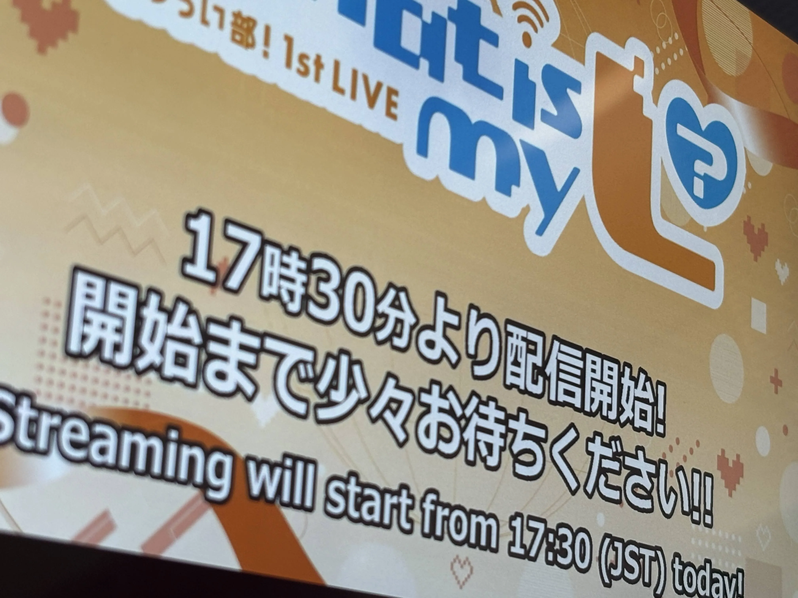
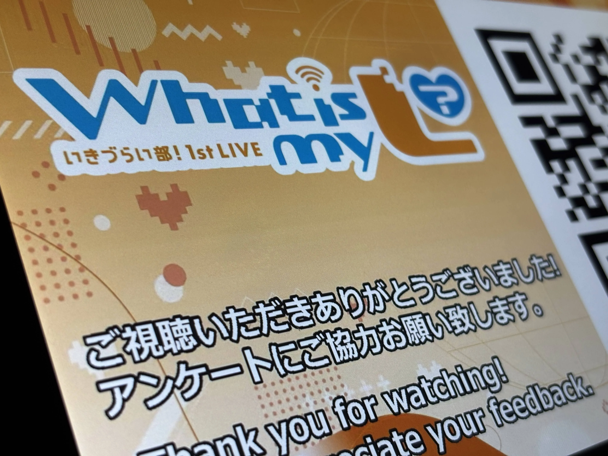
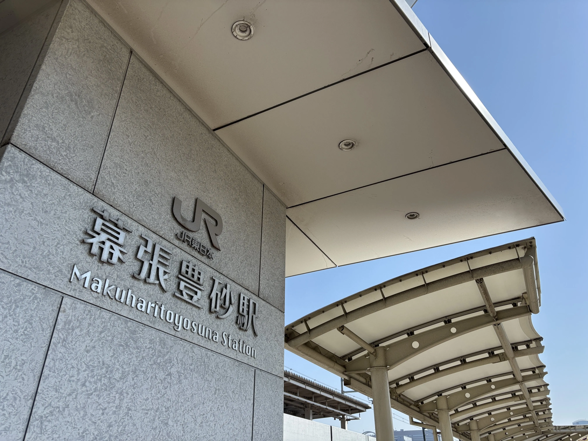
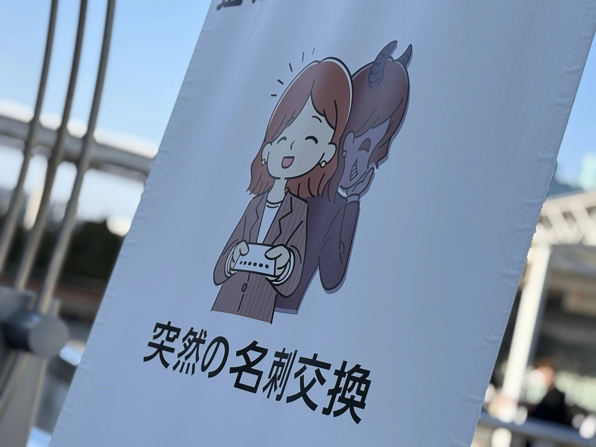
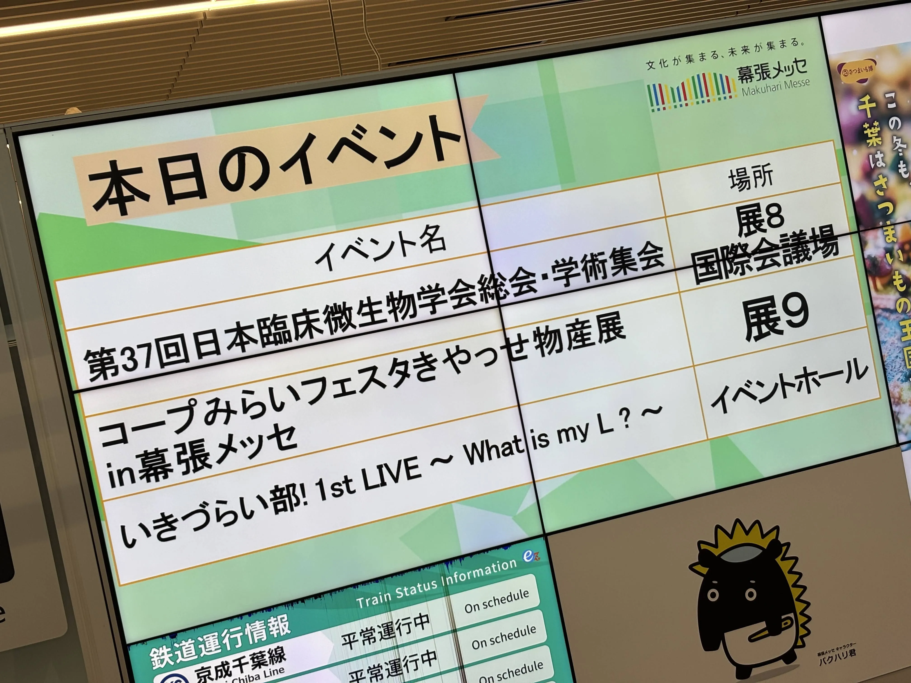
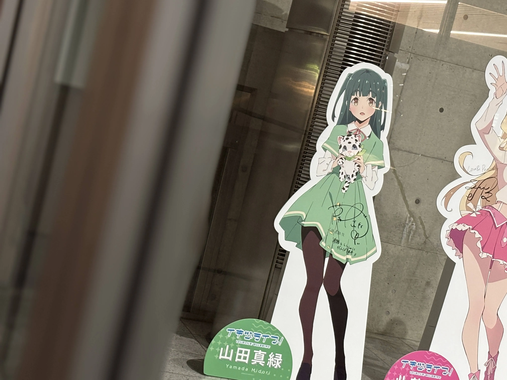

いきづらい部！ 1st LIVE What is my L ?に参加しました。
1日目はチケット争奪戦に敗れてしまったので自宅から配信で参加。

今回ありがたい事に1日目に関してはYoutubeにて無料配信が実施されていました。
おそらくチケット争奪戦に敗れてしまった人が多かったからという事でしょうか…。
1日目の感想としては、自宅からの配信でも会場の盛り上がりが伝わってくるほど、とても盛り上がっていました。
これは明日が楽しみだなあと思いました。

2日目。
1日目と違いチケットを持っているので会場へ。
幕張豊砂駅ですね。

今回の会場の最寄り駅は海浜幕張駅なのですが1つ隣の駅で降りた理由は幕張豊砂駅のイオンモールにて岬なこさんのリリースイベントがある為ですね。
因みに岬なこさんが若干このライブについて言及されており面白かったですし、楽曲も素敵でした。
という事でリリースイベントが終了し会場へ徒歩で向かう事に。4thの際に車で来た事もあったため少し懐かしい気持ちになりました。
幕張メッセあるある。突然の名刺交換を迫る上原歩夢。

ヲタクと何故か駐車場で合流し（？）、昼食を食べていなかったのでコンビニへ。水やらパンやら購入して入場する事に。

入場してからスタンドパネルを撮るというヲタクが居たので同行する事に、かなり並んでおり40分ぐらい掛かりました…。
因みにスタンドパネルに関しては後々撮れる機会があったのでここでは割愛します。
座席に関してはアップグレード席だった事もありアリーナ。しかも通路側、ブロックの後ろから2列目（=トロッコ2列目）という良い席でした。
感想としては盛り上がる曲がとても多いなと思いました。もうちょっと予習しておけば良かったなあなんて思う事もありました…苦笑
因みにアップグレード席の恩恵（？）としてはトロッコで爆レスを貰えた事ですね。
天沢朱音さんと小戸森穂花さんにハートを貰いました。奥村優希さんにもレスを貰いましたよ。全てDaitan Party Timeのトロッコで貰いました。
アップグレード席は結構賛否両論あるものの、良席が当たらない僕からするとかなり有り難いですね。
そして発表事項として2ndライブの発表が！会場は京王アリーナ東京！ベルーナドームでは無いという事で一安心。
これからの活動が楽しみですね。
おまけ、終演後にヲタクと会場近辺でお話していた所入口にスタンドパネルが運ばれてきました。（！）
